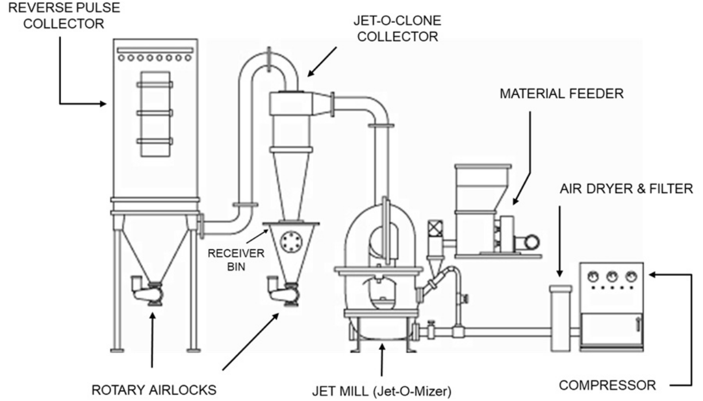

Air-Jet Milling Process Layout
Fluid Energy mills such as pancake, loop, and fluid bed mills, are used to break down granular material to fine powders. All jet mills are continuously operating devices so an overall milling system requires additional equipment beyond just the mill. In the picture at the right, is a jet milling system using a Fluid Energy Jet-O-Mizer. Equipment is needed to transport the coarse or granular material into the mill in a consistent fashion. After the mill grinds the material into a finer powder, additional separation and storage equipment is necessary beyond the mill.
In this article we will review the main components of a milling system. When considering whether to purchase a milling system, it is a good to know the basic process requirements. Below is a schematic of a Jet-O-Mizer process showing the main pieces of equipment.

Main Supporting Equipment For Jet-Milling System:
Compressor: Air compressor raises air pressure from ambient to 100-125 psi. Air pressure of 100-125 psi is required to effectively grind powder. (Note: Fluid Energy does not supply air compressors or Air Dryers & Filters (Items 1 and 2). We can provide technical support for purchase by the customer.)
Air Dryer & Filter: These components remove moisture and unwanted particulates for the feed air. There are many dryer and filter options available.
Material Feeder: Hopper with screw feeder meters material into Jet-o-Mizer for grinding. Feeder has controls to meter material at a consistent, fixed rate. The material is fed through a venturi funnel using a vacuum set up with a pusher nozzle at the mill inlet.
Jet-O-Clone Collector/Receiver Bin/Rotary Airlock Valve: A cyclone separator (e.g. Jet-O-Clone Collector) is used to remove the majority of product from the gas stream exiting the jet mill. This is the main product stream of fine powder from the mill. Product is collected in Receiver Bin and fed via gravity from Receiver Bin through rotary valve into packaging container. Cyclones are not always needed and can be eliminated making the Reverse Pulse Collector (#5) the primary milled product collector.
Reverse Pulse Collector/Rotary Airlock: Dust collector contains cartridges/filters to separate out remaining finer powder in gas stream. This is the secondary stream of product from the mill. When pulsing cartridges to clean them, finer material falls to bottom of collector and is gravity fed through rotary valve to packaging. Other equipment has been used instead of or in addition to a pulse collector: Wet scrubbers, electrostatic precipitators, HEPA filters. Some of the factors which influence the selection of the product collection equipment may be the number of products handled in a system, frequency of product changes, desire to segregate fine material from finished product, explosive nature of the product, toxic nature of the product.
Exhaust fan (not shown). Ensures proper air flow from the pulse collector.
The schematic above details a Jet-O-Mizer system, but all Fluid Energy milling system follow the same basic layout. MicroJets, like the Jet-O-Mizer, use a venturi induction feed method and use an exhaust for flow assistance, if needed. The RotoJet classifying jet mill, aka fluid bed mill, operates under a vacuum so the venturi injection system is not always needed but a high intensity exhaust fan is an absolute necessity. Even with the physical differences, all three (3) type of Fluid Energy jet mills (MicroJet, Jet-O-Mizer, RotoJet) need consistent feed and product separation equipment. The size and orientation of the support equipment will vary with the space available, size of feed and finished material containers and other restrictions like area electrical classifications. Systems can be made to fit into glove boxes, bunkers, open warehouse or even outside.